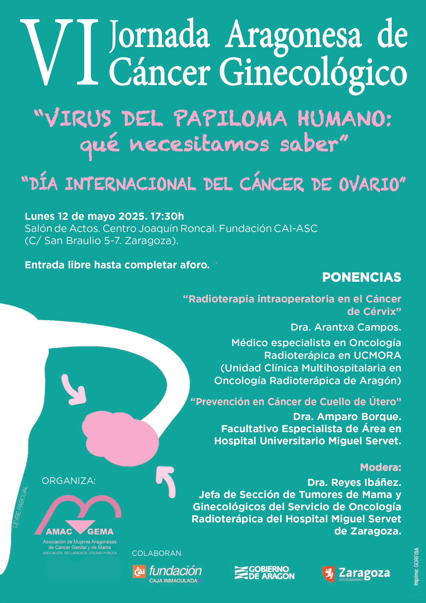

Divulgación y Encuentros
Volver a ProyectosJornada Aragonesa de Cáncer Ginecológico
Espacios de divulgación, prevención y encuentro impulsados por AMAC-GEMA.

Sobre las Jornadas
AMAC-GEMA impulsa periódicamente jornadas dedicadas al cáncer ginecológico y de mama. Estos encuentros son espacios abiertos de divulgación que reúnen a profesionales sanitarios, personas afectadas y a la ciudadanía para compartir conocimiento riguroso, debatir sobre necesidades reales y promover la prevención y la calidad de vida.
Colaboran:
Ayuntamiento de Zaragoza, Gobierno de Aragón, Fundación CAI
Última Edición (2026): Aspectos Destacados
- Título: VI Edición “Virus del Papiloma Humano: qué necesitamos saber”.
- Fecha y Hora: Lunes 12 de mayo de 2025 a las 17:30 h.
Ponencias y Participantes
Radioterapia intraoperatoria en el Cáncer de Cérvix: Impartida por la Dra. Arantxa Campos (Médico especialista en Oncología Radioterápica en UCMORA).
Prevención en Cáncer de Cuello de Útero: Impartida por la Dra. Amparo Borque (Facultativo Especialista de Área en el Hospital Universitario Miguel Servet).
Modera: Dra. Reyes Ibáñez (Jefa de Sección de Tumores de Mama y Ginecológicos del Servicio de Oncología Radioterápica del Hospital Miguel Servet).